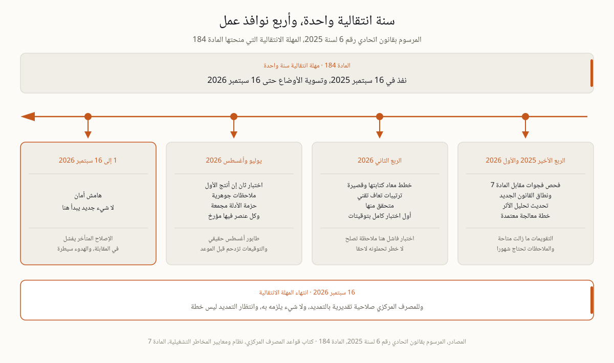

دخل المرسوم بقانون اتحادي رقم 6 لسنة 2025 حيز النفاذ في 16 سبتمبر 2025، فجمع تنظيم البنوك وشركات التأمين ومزودي خدمات الدفع والممكنين التقنيين في إطار واحد. وتمنح المادة 184 الجهات الخاضعة مهلة انتقالية سنة واحدة، حتى 16 سبتمبر 2026، لتسوية أوضاعها من ترخيص وحوكمة وترتيبات امتثال وفق القانون الجديد. وللمصرف المركزي صلاحية تقديرية بالتمديد، ولا شيء يلزمه به. أما متطلبات المرونة نفسها فلم تولد مع هذا التاريخ، فهي قائمة في المادة 7 من كتاب القواعد وقد شرحناها في صفحة متطلبات المصرف المركزي. الذي يتغير هو كلفة الجواب الضعيف، لأن الانتباه الرقابي حول المرحلة الانتقالية يجعل السؤال الواحد يفتح ملفا كاملا. ويستوي في هذا من كان داخل النطاق منذ سنوات ومن دخله حديثا مع الإطار الموحد، فالتاريخ واحد للجميع ولا يفرق بين مؤسسة قديمة وأخرى ما زالت تبني حوكمتها.
الوقت المتاح يتسع لعمل مرتب، ولا يتسع لعمل مكرر. وهذه قسمة السنة الانتقالية على أربع نوافذ، لكل نافذة ما ينتهي فيها وسبب يفسر موقعها.
| النافذة | ما يجب أن ينتهي فيها | لماذا حينها |
|---|---|---|
| الربع الأخير 2025 والربع الأول 2026 | فحص فجوات مقابل المادة 7 ونطاق القانون الجديد، وتحديث تحليل الأثر، وخطة معالجة معتمدة من المجلس | التقويمات الداخلية والمستشارون ما زالوا متاحين، والملاحظات تحتاج شهورا حتى تغلق |
| الربع الثاني 2026 | خطط معاد كتابتها وقصيرة، وترتيبات تعاف تقني متحقق منها، وأول اختبار كامل منفذ بتوقيتات | اختبار أول فاشل في الربع الثاني ملاحظة تصلحونها، وفي الربع الثالث خطر تحملونه |
| يوليو وأغسطس 2026 | اختبار ثان إن أنتج الأول ملاحظات جوهرية، وحزمة أدلة مجمعة فيها السياسة وتحليل الأثر والخطة وتقارير الاختبار ومحاضر المجلس | طابور أغسطس حقيقي، فالمراجعون الخارجيون والتوقيعات الداخلية تزدحم قبل المواعيد التنظيمية |
| 1 إلى 16 سبتمبر 2026 | هامش أمان، ولا شيء جديد يبدأ هنا | الإصلاحات المتأخرة تفشل في المقابلات، وأسبوعان هادئان يشيران إلى السيطرة |

الترتيب ليس ذوقا تنظيميا بل تسلسل اعتمادية. لا تستطيعون اختبار خطة لم تعيدوا كتابتها، ولا إعادة كتابة خطة قبل أن تعرفوا أي وظائف حيوية وأي أهداف تعاف تخدمها، ولا معرفة ذلك قبل تحديث تحليل الأثر، ولا تحديث تحليل الأثر قبل أن تعرفوا أين أنتم من المادة 7 أصلا. لذلك يأتي فحص الفجوات أولا، وهو أسرع مرحلة وأقلها كلفة وأكثرها أثرا على بقية السنة، لأنه يحول سؤالا مفتوحا عن الجاهزية إلى قائمة محددة بعدد بنودها وأصحابها وكلفة إغلاقها. ومن يقلب الترتيب يدفع مرتين، مرة حين يكتب خطة على أساس قديم، ومرة حين يعيد كتابتها بعد أن يكشف تحليل الأثر المحدث أن الوظائف الحيوية ليست هي التي افترضها. والأسئلة التي يجيب عنها فحص الفجوات مرتبة مجالا مجالا في مراجعتنا الذاتية من ثمانية عشر سؤالا.
التاريخ ثابت، والمتغير الوحيد هو موقعكم منه. لذلك لا يكفي أن يظهر 16 سبتمبر 2026 وحده في تقويم المجلس، بل تظهر معه أربعة تواريخ داخلية، تاريخ اعتماد خطة المعالجة، وتاريخ إقفال تحديث تحليل الأثر، وتاريخ أول اختبار كامل، وتاريخ اكتمال حزمة الأدلة. كل تاريخ من هذه الأربعة يملكه مسؤول باسمه ويرفع عنه تقرير في اجتماع محدد، وما يطلبه المجلس في هذه التقارير مشروح في صفحتنا عن دور مجلس الإدارة. المؤسسة التي تضع هذه التواريخ اليوم تدخل الموعد بملف قائم، والمؤسسة التي تكتفي بالتاريخ الأخير تكتشف في أغسطس أن كل شيء استحق في الشهر نفسه. والفرق بين الحالتين ليس في حجم العمل، فهو واحد تقريبا، بل في توزيعه على أشهر يتحملها الفريق بدل أسابيع لا يتحملها أحد.
المصادر، المرسوم بقانون اتحادي رقم 6 لسنة 2025، المادة 184، uaelegislation.gov.ae · كتاب قواعد المصرف المركزي، نظام ومعايير المخاطر التشغيلية، المادة 7، rulebook.centralbank.ae.
بناء هذا التسلسل مرة واحدة بشكل صحيح هو مادة برنامج ERGP، أول شهادة في حوكمة المرونة متاحة بالكامل باللغة العربية وبالإنجليزية أيضا. ست وحدات وستة مخرجات عملية ومشروع ختامي يناقش أمام ممتحن وشهادة قابلة للتحقق.
تعرف على برنامج ERGP